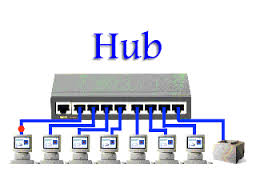

Nel caso diffuso delle reti Ethernet, un hub è un dispositivo che inoltra i dati in arrivo da una qualsiasi delle sue porte su tutte le altre, cioè in maniera diffusiva (broadcasting). Per questa ragione può essere definito anche un "ripetitore multiporta".